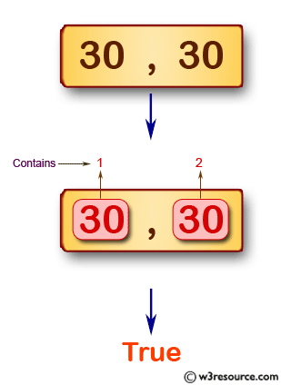

Escriba un programa JavaScript para probar si un arreglo dado de enteros contiene 30 y 40 dos veces. La longitud de la matriz debe ser 0, 1 o 2. R:79
Haz click en el botón para probar si un arreglo dado de enteros contiene 30 y 40 dos veces.
Escriba un arreglo:
Probar arreglo
Descripción gráfica del Ejercicio.
